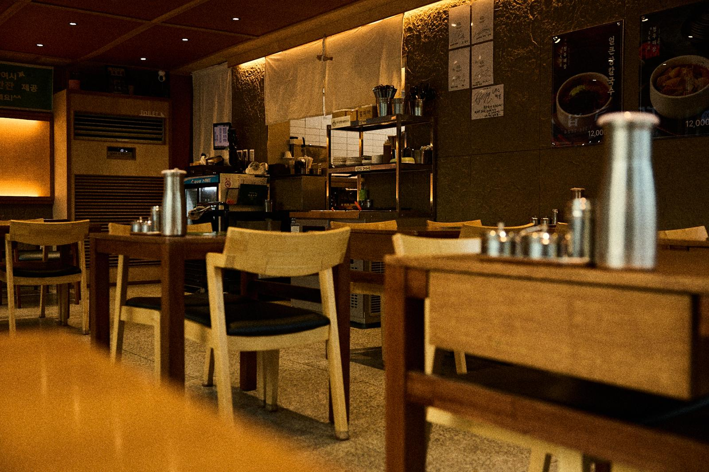
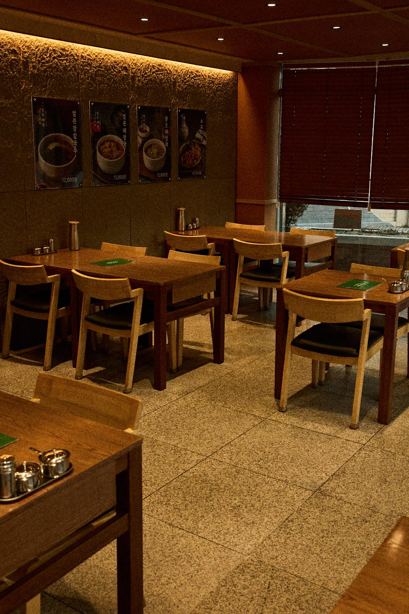
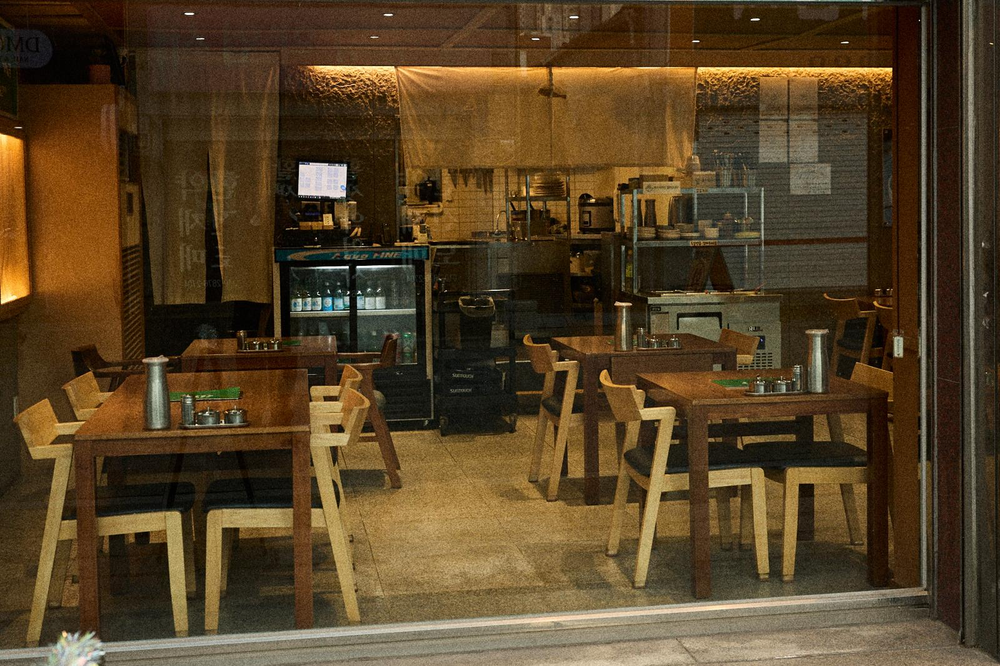

국물이 먼저입니다
아침마다 뼈를 눌러 국물부터 냅니다. 맑은 해장국은 자극 없이, 얼큰 해장국은 다진 양념을 풀어 얼큰하게. 같은 국물에서 두 갈래로 나갑니다.

대구 약령시 약전골목, 근대골목투어 길목에 있는 한식당입니다. 관광 오신 분도 근처에서 일하시는 분도 부담 없이 한 끼 드시고 가시라고 문을 열었습니다.
아침마다 뼈를 눌러 국물부터 냅니다. 맑은 해장국은 자극 없이, 얼큰 해장국은 다진 양념을 풀어 얼큰하게. 같은 국물에서 두 갈래로 나갑니다.
맑은 갈비탕과 아롱사태수육은 맵지 않습니다. 생신·어버이날·가족 모임 상차림으로 가장 많이 찾으시는 메뉴입니다.
약령시·서문시장·동성로·근대골목 어디서든 걸어서 닿습니다. 근처 호텔 투숙객이 아침·점심으로 들르기 좋은 위치입니다.
40명 이하 단체 예약이 가능합니다. 점심 웨이팅이 잦으니 인원이 많으면 미리 전화 주세요.
청우해장이 있는 남성로는 그냥 길이 아닙니다. 조선 후기부터 한약재가 오가던 대구약령시의 본거리이자, 오늘날 근대문화골목 투어가 지나는 길목입니다.
대구약령시는 조선 효종 연간, 경상감영 객사 주변에서 한약재를 사고팔던 계절시장으로 시작했습니다. 봄·가을 한 달씩 열리던 장이 오늘날에는 상설 시장이 되어 남성로 일대 — 사람들이 약전골목이라 부르는 이 거리 — 에 자리 잡았습니다. 지금도 골목을 걸으면 한약방에서 새어 나오는 약재 냄새가 납니다. 청우해장은 그 골목 안, 약령시한의약박물관 바로 옆에 있습니다.
대구 중구의 골목투어 「근대로의 여행」 제2코스가 근대문화골목입니다. 2012년 한국 관광의 별로 뽑혔고 한국관광 100선에도 연이어 이름을 올린, 골목투어를 전국 콘텐츠로 만든 길입니다. 청라언덕의 선교사 주택에서 시작해 3·1만세운동길 계단을 내려와 계산성당과 이상화·서상돈 고택을 지나면, 길은 자연스럽게 약전골목으로 이어집니다.
골목투어는 대개 두세 시간이 걸립니다. 코스 한가운데에서 뜨거운 국물 한 그릇 놓고 앉으면 나머지 절반이 훨씬 수월합니다. 아침 일찍 오신 분은 맑은 해장국을, 걷고 오신 분은 갈비탕을 많이 드십니다.
2024년 새로 단장한 매장입니다. 통유리 창가석과 원목 테이블, 40석 규모.








지하철 1·2호선 반월당역에서 도보 5분. 약령시 한의약박물관 옆 약전골목 안쪽입니다.
예약은 전화로 받습니다. 40명 이하 단체 가능, 포장 가능. 점심시간(12:00~13:30)에는 웨이팅이 있을 수 있습니다.
053-255-7052전화는 영업시간(11:00~22:00) 중에 받습니다.
네, 전화 예약을 받습니다. 40명 이하 단체 예약도 가능합니다. 053-255-7052 로 연락 주세요.
매장 전용 주차장은 없습니다. 약령시 공영주차장 등 인근 유료 주차장을 이용해 주세요.
네, 15:00~17:00 이 브레이크타임입니다. 라스트오더는 21:00, 마감은 22:00 입니다.
맑은해장국, 청우 약전 갈비탕, 아롱사태수육은 맵지 않습니다. 어르신이나 아이와 함께 오셔도 괜찮습니다.
평일 점심(12:00~13:30)과 주말에는 대기가 있는 편입니다. 오픈 직후나 저녁 이른 시간이 여유롭습니다.
네, 포장 가능합니다. 전화로 미리 주문해 두시면 기다리지 않고 가져가실 수 있습니다.
이 홈페이지에서 영어·일본어·중국어로 메뉴를 확인하실 수 있습니다. 매장 직원에게 화면을 보여주셔도 됩니다.